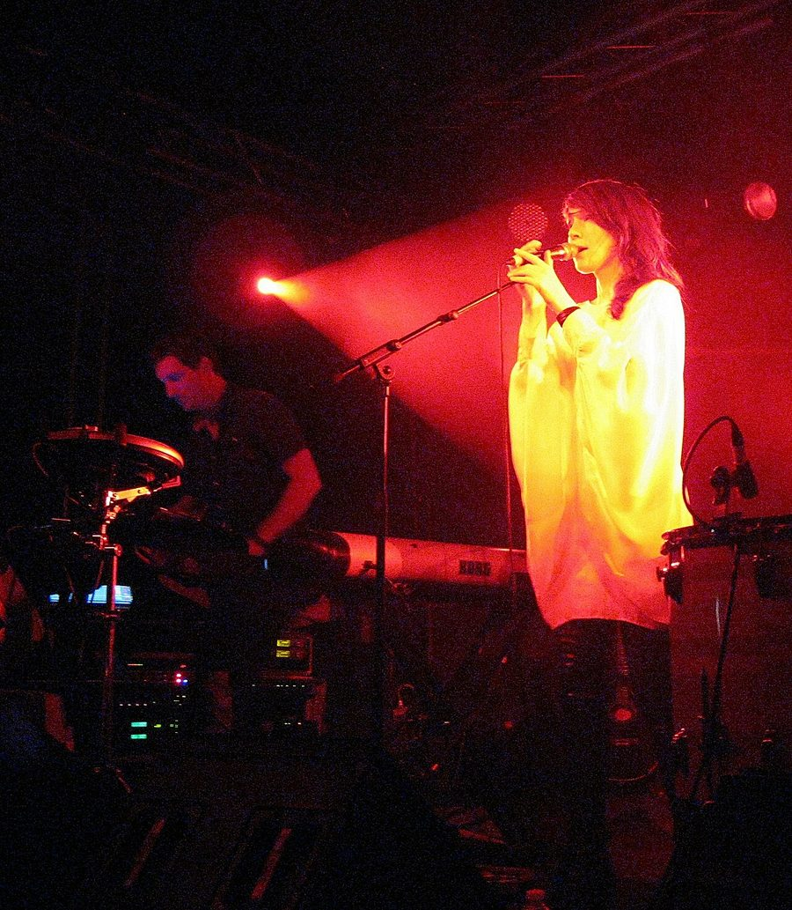

Lamb announce sideshows, presented by inthemix



UK trip-hop favourites Lamb were welcomed with open arms when they reformed earlier this year for a series of festivals and one-off live shows, and luckily Australia is it as they’ll be returning for the first time in over six years during the New Year period. They’d already been announced as the headliners for the annual Peats Ridge Festival in Sydney, but if you hail from Brisbane or Melbourne then you’re in luck as they’ve just been announced to play two exclusive sideshows, presented by inthemix.
The duo of Lou Rhodes and Andy Barlow took the world by storm throughout the 90s, hitting their mark with their debut self-titled album and winning fans with their vocal-led soundscapes that fused the ubiquitous trip hop sounds of the time with jazz, drum n’ bass and heaps more. While the pair have had their ups and downs with their working relationship, having gone their separate ways in 2004, in 2009 they decided it was time to bring the Lamb experience to the public again.
While we haven’t seen them in Australia since 2003, inthemix had the following to say about their Perth show the last time they were here. “If you haven’t yet seen Lamb live ensure that they’re on your list of bands to see before you die. It truly is an experience like no other.” Enough encouragement for you?
Lamb sideshows, presented by inthemix:
Wed 30th Dec – Prince Bandroom, Melbourne
Sun 3rd Jan – The Tivoli, Brisbane